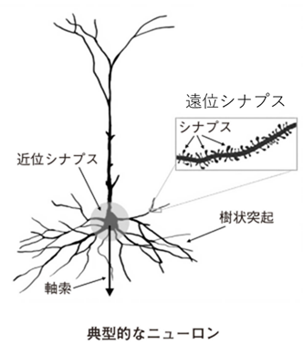
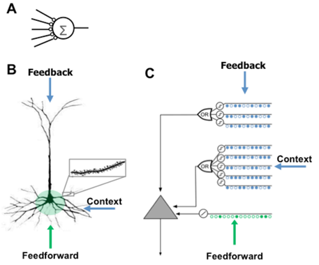

Any theory of the brain or neural network that ignores ninety percent of the connections is bound to be wrong
脳やニューラルネットワークに関するどんな理論であれ、接続の90パーセントを無視するものは、間違いなく誤りである。
・・・ ところが妙なことに、細胞の近くにあるシナプスは全体の 1 割に満たない。9 割以上が、活動電位を発生するには遠く離れすぎている。
遠位シナプスのひとつに入力が到達しても、細胞体にはほとんど影響しない。

長年にわたって、新皮質のシナプスの 9 割が何をするのか、誰にもわからなかったのだ。
1990 年ごろから、この見方が変わった。樹状突起に沿って伝わる新しいタイプの活動電位が発見されたのだ。
あるタイプの樹状突起で隣り合う 20 ほどのシナプス集団が同時に入力を受けるときに始まる。ひとたび樹状突起活動電位が生じると、樹状突起を伝わって、最終的に細胞体に到達する。そこに着くと細胞の電位を上げるが、ニューロンの活動電位を発生するほどではない。
ニューロンが刺激されるこの状態はしばらく続いたあと、正常に戻る。科学者は再び当惑した。樹状突起の活動電位は、細胞体に活動電位を発生させられるほど強くないなら、何の役に立つのか？
遠位シナプスが脳の機能に不可欠の役割を果たすに違いない、と私には分かっていた。シナプスの 9 割を考えに入れない理論やニューラルネットワークはうまくいかないはずだ。
私の重要なひらめきとは、樹状突起活動電位は予測である、ということだ。
活動パターンを検出すると、ニューロンは樹状突起活動電位を発生し、それが細胞体の電圧を上昇させ、細胞をいわゆる予測状態にする。
予測状態にあるニューロンが次に、活動電位を発生するのに十分な近位入力を受ければ、ニューロンが予測状態ではなかった場合よりも早く、細胞は活動電位を発生する。
いくつかのニューロンが予測状態にあるなら、そのニューロンだけが活動電位を発生し、ほかのニューロンは抑制される。結果的に、予想外の入力が到着すると、複数のニューロンが一度に発火する。入力が予測されていれば、予測状態のニューロンだけが活性化する。これは新皮質についての一般的な観察結果と一致する。予想外の入力のほうが、予測されていたものより、はるかに多くの活動を引き起こすのだ。
各ニューロンは、ニューロンが活性化すべきときを予測する何百ものパターンを認識できる。
われわれはこの理論をまず 2011 年に白書で発表した。その後、2016 年に審査のある専門誌で「なぜニューロンに何千ものシナプスがあるのか、新皮質内のシーケンス記憶理論」と題した論文(*)として発表した。
* Why Neurons Have Thousands of Synapses, a Theory of Sequence Memory in Neocortex (2016)

現代のディープラーニング（人工ニューラルネットワーク）の多くは、入力されたデータが前方の層へと一方通行で伝わっていく「順方向（フィードフォワード）」の処理が中心です。
しかし、実際の生物の脳（特に知能を司る大脳新皮質）を観察すると、感覚器官から入ってくる順方向の信号は全体の10%程度にすぎません。残りの約90%の接続は、脳の上の階層から下の階層へ戻る「フィードバック信号」や、同じ階層のニューロン同士を結ぶ「横方向の接続」で占められています。
ホーキンスの理論（HTM理論や「千の脳」理論）において、この90%のフィードバック接続は「次に何が起こるかという予測」を常に送り出すために使われています。脳はただ受動的に情報を受け取っているのではなく、膨大なフィードバック接続を使って「世界がどうなっているか」のモデルを常に更新し、次の瞬間を能動的に予測しています。これによって、私たちは少ない情報からでも瞬時に状況を理解したり、自分の行動に伴う感覚の変化を予測したりできます。
彼は、この圧倒的多数を占める「フィードバック構造」や「物理的な脳のアーキテクチャ」を無視して、ただ大量のデータと順方向の計算だけで知能を作ろうとする現代のAIアプローチには限界があると指摘しています。
「脳をモデルにしている」と言いながら、その構造の9割（フィードバックやコンテキストの共有）を削ぎ落としてしまっているネットワークは、真の知能（AGI：人工一般知能）にはたどり着けない、という強い警告とメッセージが込められています